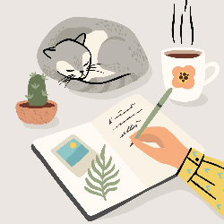

Who Am I?
This is a big question, so let's start with some facts.
My name is Michelle Petit and I've been alive for forty-four years, given birth to three children, got married in 1999,
and filed for divorce in 2019. I currently live in Caldwell, ID, about 30 minutes from where I grew up, but during my
marriage I lived in Idaho, Washington, New York, Oregon, Louisianna, and then back to Idaho. Besides my two children,
my house is filled with animals, books, food, and fun electronic devices. I went back to college nine months
after I filed for divorce. I would have started sooner, but by the time I figured out all of the logistics
I had missed the registration deadline. I think it all worked out for the best, though, because I love my
class schedule and really enjoy the people I'm going through the course with.
As for the things that are not-so-easily-proven: I am a planner, an
optimist, a survivor, a problem-solver, a bibliophile, an animal lover, an introvert who likes
people, a believer in honesty and equality, family-oriented, strong-willed, and kind hearted. I can also be overly anxious,
afraid of failure, and you might have a hard time getting my attention when I'm in the middle of a good book.
Why Coding?
If you had asked young Michelle what she wanted to be "when she grew up", she would have unequivocally answered, "a veterinarian".
While my love for animals hasn't diminished with age (spending the majority of my time with them still sounds
like a great idea to me) now that I'm in my forties I've realized that I'd rather enjoy animal companionship
on a more casual level. Which is probably how I ended up sharing my space with three dogs and two cats! But this
doesn't explain how I made the jump from veterinary medicine to software development. Let me explain.
I grew up around computers. My father was an electrical engineer at Hewlett Packard, and the company loaned
him many computers over the years so he could work on projects whenever he liked. My siblings and I weren't
allowed to play on his work computer, but eventually we got to play simple text-based games on an outdated model
(I'm an eighties child). And boy, did we like it! I can remember impatiently waiting for my turn to use the keyboard
so I could type in what my guesses were to the puzzles that had us stumped – brothers don't always listen to their sister's ideas.
But studying software development or computer science in college wasn't something I considered doing until the
last six years or so. That might seem strange given my childhood exposure to computers, but when I thought
computer careers I thought electrical engineer. And that wasn't a degree that interested me.
I started my studies at the College of Western Idaho in January of 2020, and I can honestly say I'm loving my classes.
Having an electrical engineer as a father is definitely paying off. One of my father's favorite sayings
was, "use your fundamental problem solving skills." That was his answer to most of our childhood questions.
Whenever we asked
for his help with school work he would first make us think out each step, and he never gave us the answer. We had to
listen to his explanations and come up with the answer ourselves. This is how I view software development.
By applying problem solving skills and logic, in addition to the knowledge I'm learning at CWI, I can successfully create
computer programs.
My path to software development was long and winding, but I'm so happy to be here! I'm excited to
finish my studies and start on a new path to career development.
What Are My Interests?
If I'm not reading a book or hanging out with my children, you can usually find me watching one of my
favorite science fiction shows (Star Trek, Babylon5, Stargate, Eureka, etc.) or creating handmade items for the Instagram
planner community I'm a member of. It used to be that a lot of my free time was spent playing the MMORPG
World of Warcraft,
but I didn't want to be tempted to participate in events when I needed to be homeschooling my children or studying for my
classes, so I placed my account on hold.
A couple of years ago I decided to open an Etsy shop to sell some of my handmade crafts to fellow planner
and stationery lovers. I love connecting with people all over the world who share my enjoyment of embellishing their to-do lists,
goal sheets, scrapbooks, journals, and snail mail. My products are just little bits of art, but it's neat to think that someone in The
Netherlands or England is using (and hopefully loving) something I made!
I also enjoy the domestic arts of cooking and baking, albeit more as a hobby to enjoy in my free time rather
than as an everyday necessity. I'm more of a quick meal kind of girl during the weekdays. My next culinary goal is to learn
how to make bagels that are crisp on the outside and soft on the inside.
I'm not sure how many people would agree that organization skills could be considered an interest, but I

love combining organization with interior design. One of my favorite bloggers,
IHeartOrganizing, introduced me to clear bins and the idea of visual clutter and my life has never been the same!
That's obviously a hyperbole, but it wouldn't be an overstatement to say that I love learning new things.